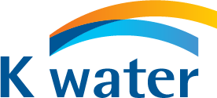
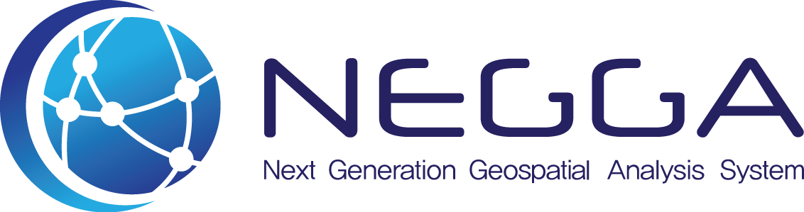

수행 사례
R&D / 빅데이터 분석 / 구축 & 개발 / 컨설팅 등 다양한
분야에서 활약하고 있으며 지속적으로 성장하고 있습니다.

-
빅데이터 센터 구축 사업
기업 인증 빅데이터 기반 중소기업 성장예측 서비스 플랫폼
-
에너지 기술 개발 사업
에너지 다소비 업종 대상 맞춤형 공장 에너지 관리시스템(FEMS) 기술 개발
-
AI 식별 추적 시스템 구축 사업
AI 식별 추적 시스템 성능 검증(평가) 모델 개발
-
혁신형 기업 기술 개발 사업
지능형 정보 서비스를 위한 처방 분석 기반 지능형 빅데이터 분석 플랫폼 개발
-

기술멘토링 기획 지원 사업
지능형 빅데이터 플랫폼 개발에 필요한 Exobrain 기술의 지식 베이스 및 추론 기술 지원
-

우수 기술 연구 센터(ATC) 사업
애플리케이션 품질 검증을 위한 장면 기반 지능형 테스트 자동화 플랫폼 원천 기술 개발
-
관세청 빅데이터 시스템 분석 모델 개발
관세 행정 통관 분야 업무 패턴 분석 및 최적화 프로세스 도입
-
교통 정보 예측 플랫폼 데이터 분석 및 검증
교통 데이터 분석을 통한 알고리즘 개발
통계에 기반한 예측 모델 평가 지표 분석
-
표준 원가 실적 원가 간 정합률 향상
데이터 분석을 통한 표준 시간 설정 방안 제시
-
절연 재료 특성 예측 모델 개발
절연 재료의 목적 특정 값을 예측하여 모델 생성
-
소비자 불만 유형 분류 모델 생성
딥러닝을 활용하여 불만 유형 분류 모델 개발
-
우승마 예측 모델 성능 개선 방안 수립
우승마 예측 모델 생성 과정 분석 및 성능 향상 방안 제시
-
키워드 트렌드 분석
뉴스와 블로그 문서로부터 인천국제공항 트렌드 분서
-
여객 혼잡도 예측 모델 생성
공항 특정 지점별 시간대 혼잡도 및 대기 시간 예측
-

상수도 요금 체납 예측 서비스 개발
체납 관련 외부 데이터 사용 여부 검토
수용가 납부 유형 예측 모델 개발
-
예측 최적화 분석 기능 개발
식품 사고 위해 예측 모델 개발
-
빅데이터 활용 분석 모델 개발 및 유지 관리
공인법인별 실정 파악을 위한 분석 모델 개발
업종 간 연관성 분석 모델 개발
법인 보유(임차)주택의 용도 및 업무관련성 검증 모델 개발
공무원 인력 재배치를 위한 분석 모델 개발
-
2021년 빅데이터 활용 분석 모델 개발 및 유지 관리
신규 분석 모델 개발 및 기존 분석 모델의 유지관리
-
출발지-도착지 통신 데이터 개발 및 검증
22년 Location 1차 통합 위치 데이터 개발
22년 Location Positioning Engine(AIP측위) 고도화 개발
21년 LITMUS 과제 개발 및 검증
-
기계학습 알고리즘 기반 제품 판정 프로그램 개발
기존 프로그램 문제점 검토 및 기계학습 기반 판정 모델 개발
-
시멘트 공정 최적화 개발
에너지를 절감하는 시멘트 원료 조합 공정 최적화 모델 개발
-
blank
blank
-
식품 사고 위해 예측 플랫폼 구축
예측 모델 생성 도구에서 응용 시스템 예측 모델 관리 기능 개발
-
상수도 요금 체납 예측 시스템 개발
ankus analyzer를 활용한 수용가 납부 유형 예측 시스템 개발
-
GIS 기반 전국 도서관 현황 제공 서비스 개발
클라우드 환경에서 빅데이터 분석이 용이하도록 빅데이터 마이크로 서비스 개발
-
인천공항 테크마켓 플랫폼 구축
Ad-hoc 빅데이터 분석 기반 항공 산업 기술 분석 서비스 개발
-
AI 기반 하수관로 결함 탐지 시스템 구축
하수관로 영상 거리 정보 문자 인식 수행을 통한 분진 발생 인식 솔루션 개발
-

AI 기반 하수관로 진단 지원 시스템 개발
하수관로 결함을 영상 인식하는 AI 모델을 개발 및 관련 시스템 구축
-
자동차 환경 빅데이터 정제 및 분석 센터 누리집 구축
분석마트 구축, 제작차 및 운행차에 대한 배출 가스 분석 모델 개발 및 시스템화
-
자동차 환경 빅데이터 구축 2차
전년도 분석 모델의 고도화 및 신규 분석 DB(Exasol) 포팅
이륜차 분석 모델 개발 및 시스템화
-
융•복합 기후 기술 데이터 정보 플랫폼 구축
융•복합 기후 기술 데이터 정보를 이용하기 위한 웹 서비스 구축
-
blank
blank
-
융•복합 기후 기술 플랫폼 정보화 전략 계획
IOT 융합 플랫폼 설계데이터 자원 창출 자가 학습 선순환을 통해
진화하는 지능 정보 기반 플랫폼 설계 -
융•복합 기후 기술 플랫폼 정보화
전략 계획(ISP)및 구축 기획융•복합 기후 기술 데이터의 관리 및 활용에 대한
정보화 전략 계획 수립 및 프로토타이핑 구축 -
AI 통합지원 서비스 플랫폼 구축을
위한 정보화 전략 계획 수립 사업AI 기술 시험용 테스트 베드 구축에 대한 목표 모델 설계 및 이행계획 수립
-
디지털 SOC(도로) 구현을 위한
AI 로드맵 수립 연구 용역 사업지능화 고속도로의 AI 적용 과제 발굴 및 관련 정보화 전략 계획 수립
-
한국마사회 정보화 전략 계획 및
차세대 경마•마필시스템 구축 방안 수립빅데이터 활용방안 컨설팅
-
blank
blank